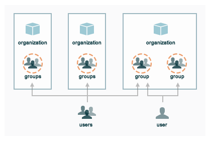

Organizations and Groups¶
The Chef server uses role-based access control (RBAC) to restrict access to objects—nodes, environments, roles, data bags, cookbooks, and so on. This ensures that only authorized user and/or chef-client requests to the Chef server are allowed. Access to objects on the Chef server is fine-grained, allowing access to be defined by object type, object, group, user, and organization. The Chef server uses permissions to define how a user may interact with an object, after they have been authorized to do so.
The Chef server uses organizations, groups, and users to define role-based access control:
{kind=link}
{kind=link}
{kind=link}
When a user makes a request to the Chef server using the Chef server API, permission to perform that action is determined by the following process:
- Check if the user has permission to the object type
- If no, recursively check if the user is a member of a security group that has permission to that object
- If yes, allow the user to perform the action
Permissions are managed using the Chef management console add-on in the Chef server web user interface.
Multiple Organizations¶
A single instance of the Chef server can support many organizations. Each organization has a unique set of groups and users. Each organization manages a unique set of nodes, on which a chef-client is installed and configured so that it may interact with a single organization on the Chef server.
A user may belong to multiple organizations under the following conditions:
- Role-based access control is configured per-organization
- For a single user to interact with the Chef server using knife from the same chef-repo, that user may need to edit their knife.rb file prior to that interaction
Using multiple organizations within the Chef server ensures that the same toolset, coding patterns and practices, physical hardware, and product support effort is being applied across the entire company, even when:
- Multiple product groups must be supported—each product group can have its own security requirements, schedule, and goals
- Updates occur on different schedules—the nodes in one organization are managed completely independently from the nodes in another
- Individual teams have competing needs for object and object types—data bags, environments, roles, and cookbooks are unique to each organization, even if they share the same name
Permissions¶
Permissions are used in the Chef server to define how users and groups can interact with objects on the server. Permissions are configured per-organization.
Object Permissions¶
The Chef server includes the following object permissions:
| Permission | Description |
|---|---|
| Delete | Use the Delete permission to define which users and groups may delete an object. This permission is required for any user who uses the knife [object] delete [object_name] argument to interact with objects on the Chef server. |
| Grant | Use the Grant permission to define which users and groups may configure permissions on an object. This permission is required for any user who configures permissions using the Administration tab in the Chef management console. |
| Read | Use the Read permission to define which users and groups may view the details of an object. This permission is required for any user who uses the knife [object] show [object_name] argument to interact with objects on the Chef server. |
| Update | Use the Update permission to define which users and groups may edit the details of an object. This permission is required for any user who uses the knife [object] edit [object_name] argument to interact with objects on the Chef server and for any chef-client to save node data to the Chef server at the conclusion of a chef-client run. |
Global Permissions¶
The Chef server includes the following global permissions:
| Permission | Description |
|---|---|
| Create | Use the Create global permission to define which users and groups may create the following server object types: cookbooks, data bags, environments, nodes, roles, and tags. This permission is required for any user who uses the knife [object] create argument to interact with objects on the Chef server. |
| List | Use the List global permission to define which users and groups may view the following server object types: cookbooks, data bags, environments, nodes, roles, and tags. This permission is required for any user who uses the knife [object] list argument to interact with objects on the Chef server. |
These permissions set the default permissions for the following Chef server object types: clients, cookbooks, data bags, environments, groups, nodes, roles, and sandboxes.
Client Key Permissions¶
Note
This is only necessary after migrating a client from one Chef server to another. Permissions must be reset for client keys after the migration.
A client is an actor that has permission to access the Chef server. A client is most often a node (on which the chef-client runs), but is also a workstation (on which knife runs), or some other machine that is configured to use the Chef server API. Each request to the Chef server that is made by a client uses a private key for authentication that must be authorized by the public key on the Chef server.
Keys should have DELETE, GRANT, READ and UPDATE permissions.
Use the following code to set the correct permissions:
#!/usr/bin/env ruby
require 'rubygems'
require 'chef/knife'
Chef::Config.from_file(File.join(Chef::Knife.chef_config_dir, 'knife.rb'))
rest = Chef::REST.new(Chef::Config[:chef_server_url])
Chef::Node.list.each do |node|
%w{read update delete grant}.each do |perm|
ace = rest.get("nodes/#{node[0]}/_acl")[perm]
ace['actors'] << node[0] unless ace['actors'].include?(node[0])
rest.put("nodes/#{node[0]}/_acl/#{perm}", perm => ace)
puts "Client \"#{node[0]}\" granted \"#{perm}\" access on node \"#{node[0]}\""
end
end
Save it as a Ruby script—chef_server_permissions.rb, for example—in the .chef/scripts directory located in the chef-repo, and then run a knife command similar to:
$ knife exec chef_server_permissions.rb
Default Permissions¶
A group is used to define access to object types and objects in the Chef server and also to assign permissions that determine what types of tasks are available to members of that group who are authorized to perform them. Groups are configured per-organization.
Individual users who are members of a group will inherit the permissions assigned to the group. The Chef server includes the following default groups: admins, clients, and users. For users of the hosted Chef server, an additional default group is provided: billing_admins.
Groups¶
A group is used to define access to object types and objects in the Chef server and also to assign permissions that determine what types of tasks are available to members of that group who are authorized to perform them. Groups are configured per-organization.
Individual users who are members of a group will inherit the permissions assigned to the group. The Chef server includes the following default groups: admins, clients, and users. For users of the hosted Chef server, an additional default group is provided: billing_admins.
Default Groups¶
The following sections show the default permissions assigned by the Chef server to the admins, billing_admins, clients, and users groups.
Note
The creator of an object on the Chef server is assigned create, delete, grant, read, and update permission to that object.
admins¶
The admins group is assigned the following:
| Group | Create | Delete | Grant | Read | Update |
|---|---|---|---|---|---|
| admins | yes | yes | yes | yes | yes |
| clients | yes | yes | yes | yes | yes |
| users | yes | yes | yes | yes | yes |
billing_admins¶
The billing_admins group is assigned the following:
| Group | Create | Delete | Read | Update |
|---|---|---|---|---|
| billing_admins | no | no | yes | yes |
clients¶
The clients group is assigned the following:
| Object | Create | Delete | Read | Update |
|---|---|---|---|---|
| clients | no | no | no | no |
| cookbooks | no | no | yes | no |
| cookbook_artifacts | no | no | yes | no |
| data | no | no | yes | no |
| environments | no | no | yes | no |
| nodes | yes | no | yes | no |
| organization | no | no | yes | no |
| policies | no | no | yes | no |
| policy_groups | no | no | yes | no |
| roles | no | no | yes | no |
| sandboxes | no | no | no | no |
public_key_read_access¶
The public_key_read_access group controls which users and clients have read permissions to the following endpoints:
- GET /clients/CLIENT/keys
- GET /clients/CLIENT/keys/KEY
- GET /users/USER/keys
- GET /users/USER/keys/
By default, the public_key_read_access assigns all members of the users and clients group permission to these endpoints:
| Group | Create | Delete | Grant | Read | Update |
|---|---|---|---|---|---|
| admins | no | no | no | no | no |
| clients | yes | yes | yes | yes | yes |
| users | yes | yes | yes | yes | yes |
users¶
The users group is assigned the following:
| Object | Create | Delete | Read | Update |
|---|---|---|---|---|
| clients | no | yes | yes | no |
| cookbooks | yes | yes | yes | yes |
| cookbook_artifacts | yes | yes | yes | yes |
| data | yes | yes | yes | yes |
| environments | yes | yes | yes | yes |
| nodes | yes | yes | yes | yes |
| organization | no | no | yes | no |
| policies | yes | yes | yes | yes |
| policy_groups | yes | yes | yes | yes |
| roles | yes | yes | yes | yes |
| sandboxes | yes | no | no | no |
chef-validator¶
Every request made by the chef-client to the Chef server must be an authenticated request using the Chef server API and a private key. When the chef-client makes a request to the Chef server, the chef-client authenticates each request using a private key located in /etc/chef/client.pem.
The chef-validator is allowed to do the following at the start of a chef-client run. After the chef-client is registered with Chef server, that chef-client is added to the clients group:
| Object | Create | Delete | Read | Update |
|---|---|---|---|---|
| clients | yes | no | no | no |
Chef Push Jobs Groups¶
Chef push jobs is an extension of the Chef server that allows jobs to be run against nodes independently of a chef-client run. A job is an action or a command to be executed against a subset of nodes; the nodes against which a job is run are determined by the results of a search query made to the Chef server.
Chef push jobs uses the Chef server API and a Ruby client to initiate all connections to the Chef server. Connections use the same authentication and authorization model as any other request made to the Chef server. A knife plugin is used to initiate job creation and job tracking.
It is possible to initiate jobs from the chef-client, such as from within a recipe based on an action to be determined as the recipe runs. For a chef-client to be able to create, initiate, or read jobs, the chef-client on which Chef push jobs is configured must belong to one (or both) of the following groups:
| Group | Description |
|---|---|
| pushy_job_readers | Use to view the status of jobs. |
| pushy_job_writers | Use to create and initiate jobs. |
These groups do not exist by default, even after Chef push jobs has been installed to the Chef server. If these groups are not created, only members of the admin security group will be able to create, initiate, and view jobs.
Reporting Groups¶
Use Reporting to keep track of what happens during the execution of chef-client runs across all of the machines that are under management by Chef. Reports can be generated for the entire organization and they can be generated for specific nodes.
Reporting data is collected during the chef-client run and the results are posted to the Chef server at the end of the chef-client run at the same time the node object is uploaded to the Chef server.
A chef-client on which Reporting is configured always sends data to the Chef server. Users of the Chef management console web user interface must belong to the following group:
| Group | Description |
|---|---|
| reporting_readers | Use to view and configure reports. |
This group does not exist by default, even after Reporting has been installed to the Chef server. If this group is not created, all members of the organization will be unable to view reports.
Server Admins¶
The server-admins group is a global group that grants its members permission to create, read, update, and delete user accounts, with the exception of superuser accounts. The server-admins group is useful for users who are responsible for day-to-day administration of the Chef server, especially user management via the knife user subcommand. Before members can be added to the server-admins group, they must already have a user account on the Chef server.
Scenario¶
The following user accounts exist on the Chef server: pivotal (a superuser account), alice, bob, carol, and dan. Run the following command to view a list of users on the Chef server:
$ chef-server-ctl user-list
and it returns the same list of users:
pivotal
alice
bob
carol
dan
Alice is a member of the IT team whose responsibilities include day-to-day administration of the Chef server, in particular managing the user accounts on the Chef server that are used by the rest of the organization. From a workstation, Alice runs the following command:
$ knife user list -c ~/.chef/alice.rb
and it returns the following error:
ERROR: You authenticated successfully to <chef_server_url> as alice
but you are not authorized for this action
Response: Missing read permission
Alice is not a superuser and does not have permissions on other users because user accounts are global to organizations in the Chef server. Let’s add Alice to the server-admins group:
$ chef-server-ctl grant-server-admin-permissions alice
and it returns the following response:
User alice was added to server-admins.
Alice can now create, read, update, and delete user accounts on the Chef server, even for organizations to which Alice is not a member. From a workstation, Alice re-runs the following command:
$ knife user list -c ~/.chef/alice.rb
which now returns:
pivotal
alice
bob
carol
dan
Alice is now a server administrator and can use the following knife subcommands to manage users on the Chef server:
- knife user-create
- knife user-delete
- knife user-edit
- knife user-list
- knife user-show
For example, Alice runs the following command:
$ knife user edit carol -c ~/.chef/alice.rb
and the $EDITOR opens in which Alice makes changes, and then saves them.
Superuser Accounts¶
Superuser accounts may not be managed by users who belong to the server-admins group. For example, Alice attempts to delete the pivotal superuser account:
$ knife user delete pivotal -c ~/.chef/alice.rb
and the following error is returned:
ERROR: You authenticated successfully to <chef_server_url> as user1
but you are not authorized for this action
Response: Missing read permission
Alice’s action is unauthorized even with membership in the server-admins group.
Manage server-admins Group¶
Membership of the server-admins group is managed with a set of chef-server-ctl subcommands:
- chef-server-ctl grant-server-admin-permissions
- chef-server-ctl list-server-admins
- chef-server-ctl remove-server-admin-permissions
Add Members¶
The grant-server-admin-permissions subcommand is used to add a user to the server-admins group. Run the command once per user added.
This subcommand has the following syntax:
$ chef-server-ctl grant-server-admin-permissions USER_NAME
where USER_NAME is the user to add to the list of server administrators.
For example:
$ chef-server-ctl grant-server-admin-permissions bob
returns:
User bob was added to server-admins. This user can now list,
read, and create users (even for orgs they are not members of)
for this Chef Server.
Remove Members¶
The remove-server-admin-permissions subcommand is used to remove a user from the server-admins group. Run the command once per user removed.
This subcommand has the following syntax:
$ chef-server-ctl remove-server-admin-permissions USER_NAME
where USER_NAME is the user to remove from the list of server administrators.
For example:
$ chef-server-ctl remove-server-admin-permissions bob
returns:
User bob was removed from server-admins. This user can no longer
list, read, and create users for this Chef Server except for where
they have default permissions (such as within an org).
List Membership¶
The list-server-admins subcommand is used to return a list of users who are members of the server-admins group.
This subcommand has the following syntax:
$ chef-server-ctl list-server-admins
and will return a list of users similar to:
pivotal
alice
bob
carol
dan
Manage Organizations¶
Use the org-create, org-delete, org-list, org-show, org-user-add and org-user-remove commands to manage organizations.
org-create¶
The org-create subcommand is used to create an organization. (The validation key for the organization is returned to STDOUT when creating an organization with this command.)
Syntax
This subcommand has the following syntax:
$ chef-server-ctl org-create ORG_NAME "ORG_FULL_NAME" (options)
where:
- The name must begin with a lower-case letter or digit, may only contain lower-case letters, digits, hyphens, and underscores, and must be between 1 and 255 characters. For example: chef.
- The full name must begin with a non-white space character and must be between 1 and 1023 characters. For example: "Chef Software, Inc.".
Options
This subcommand has the following options:
- -a USER_NAME, --association_user USER_NAME
- Associate a user with an organization and add them to the admins and billing_admins security groups.
- -f FILE_NAME, --filename FILE_NAME
- Write the ORGANIZATION-validator.pem to FILE_NAME instead of printing it to STDOUT.
org-delete¶
The org-delete subcommand is used to delete an organization.
Syntax
This subcommand has the following syntax:
$ chef-server-ctl org-delete ORG_NAME
org-list¶
The org-list subcommand is used to list all of the organizations currently present on the Chef server.
Syntax
This subcommand has the following syntax:
$ chef-server-ctl org-list (options)
Options
This subcommand has the following options:
- -a, --all-orgs
- Show all organizations.
- -w, --with-uri
- Show the corresponding URIs.
org-show¶
The org-show subcommand is used to show the details for an organization.
Syntax
This subcommand has the following syntax:
$ chef-server-ctl org-show ORG_NAME
org-user-add¶
The org-user-add subcommand is used to add a user to an organization.
Syntax
This subcommand has the following syntax:
$ chef-server-ctl org-user-add ORG_NAME USER_NAME (options)
Options
This subcommand has the following options:
- --admin
- Add the user to the admins group.
org-user-remove¶
The org-user-remove subcommand is used to remove a user from an organization.
Syntax
This subcommand has the following syntax:
$ chef-server-ctl org-user-remove ORG_NAME USER_NAME (options)